🏢 Skład Zarządu
Jacek Bidziński – PrezesRafał Winiarski – WiceprezesKrzysztof Bernacki – Skarbnik
30 marca 2026
Spotkanie Wielkanocne 2026
Gościliśmy Sekretarza Miasta Macieja Myszkę oraz delegację Uniwersytetu Trzeciego Wieku i studentów psychologii.
23 marca 2026
36 lat Klubu!
23 marca 1990 roku powstał Klub Abstynenta „Nadzieja”. Świętujemy 36 lat!
🏆 Rocznice abstynencji
23 marca 20267 lat abstynencji Renaty – gratulujemy!
29–31 maja 2026
⛵️ Flisacza Akademia Liderów Ruchu Abstynenckiego – Uniejów
Przedstawiciele Stowarzyszenia Klubu Abstynenta „Nadzieja” ze Starachowic uczestniczyli w Flisaczej Akademii Liderów Ruchu Abstynenckiego w miejscowości Uniejów. Trzy dni spotkania, wymiany doświadczeń i inspiracji – świadectwo naszego zaangażowania w ruch abstynencki.
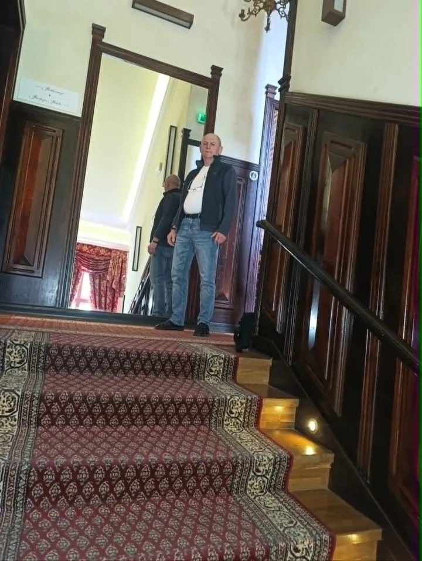
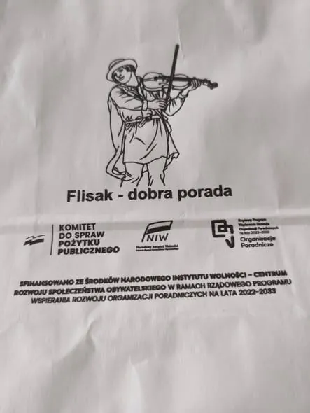
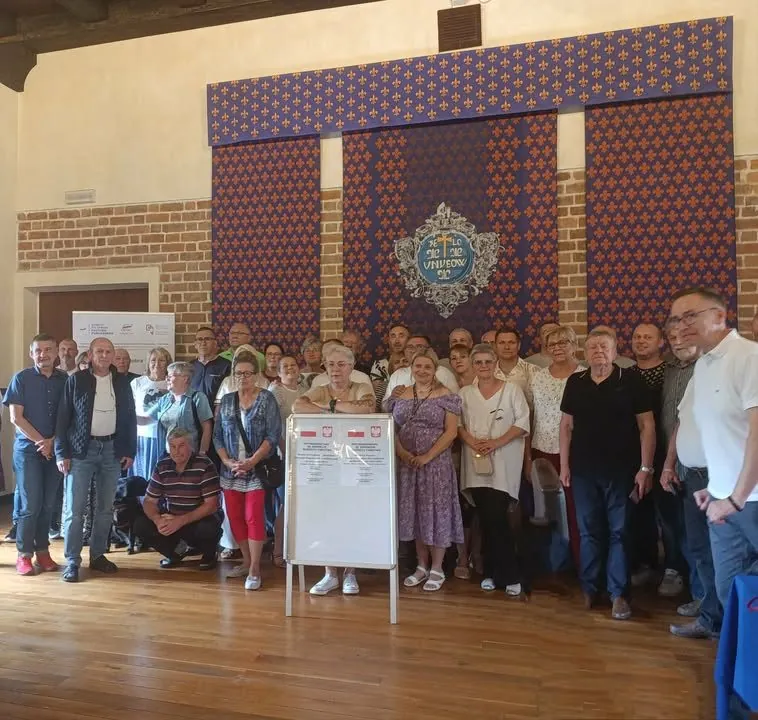
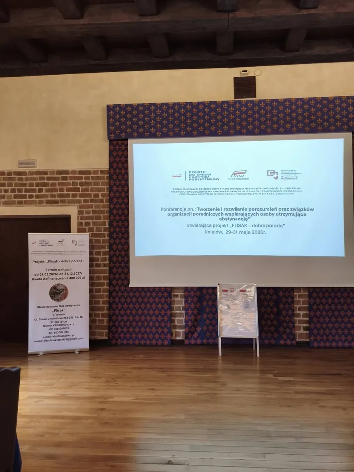
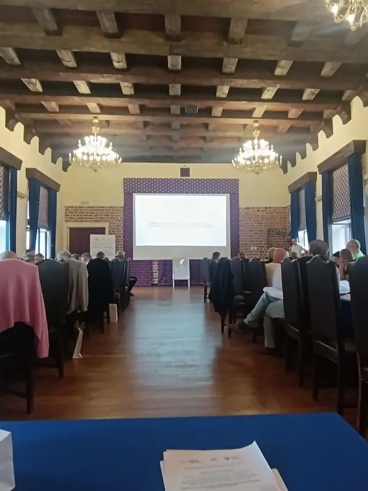
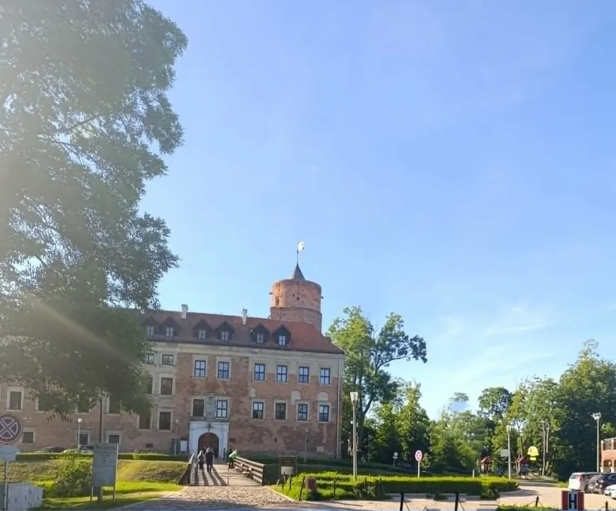
30 maja 2026
🏃 Starachowicki Maraton „Aktywna 50-tka” – Brawo Mariusz!
30 maja 2026 roku nasz kolega Mariusz z Klubu Abstynenta „Nadzieja” wziął udział w Starachowickim Maratonie „Aktywna 50-tka” i z powodzeniem go ukończył, odbierając zasłużony dyplom. „Pasje kształtują charakter” – Brawo Mariusz, życzymy kolejnych sukcesów!
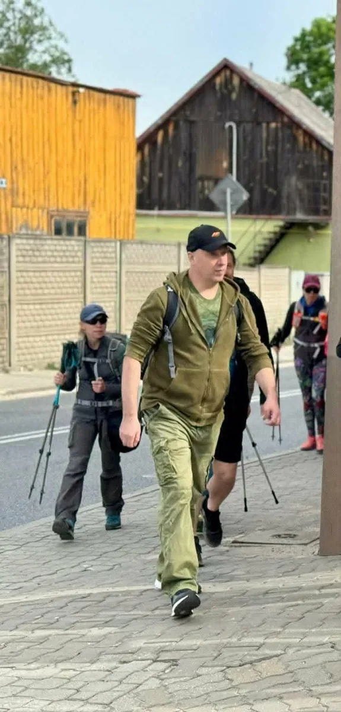
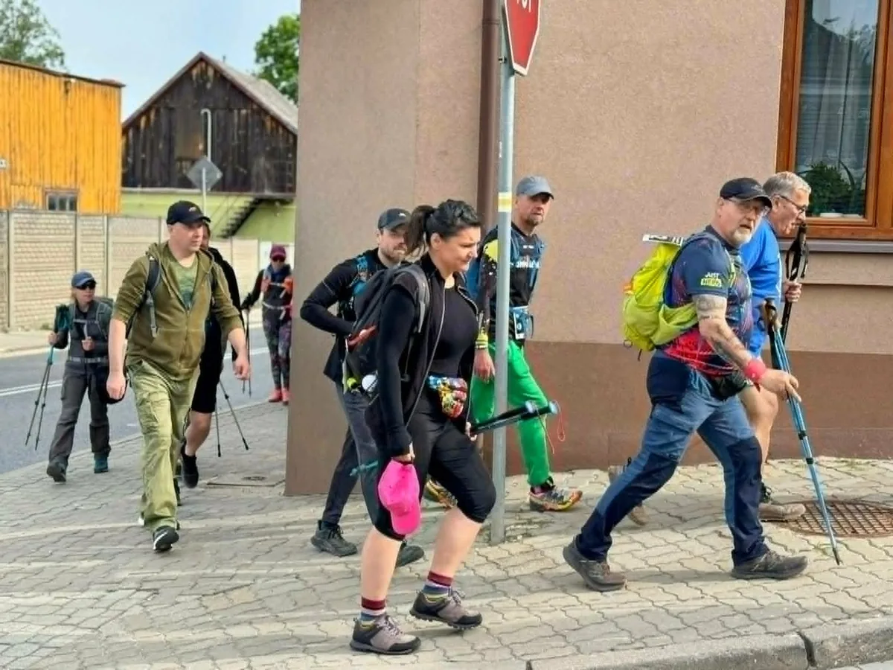
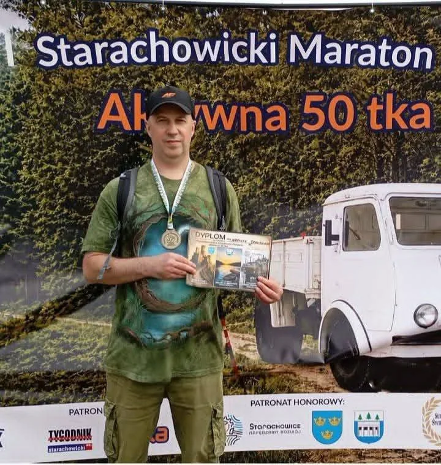
18 czerwca 2026
🎉 XXXIII lata trzeźwości Jacka – uroczyste spotkanie
18 czerwca 2026 roku obchodziliśmy w naszym Stowarzyszeniu wyjątkowy jubileusz – XXXIII lata trzeźwości Jacka. Z tej okazji odbyło się uroczyste spotkanie podkreślające ten miły jubileusz. Gratulujemy i życzymy kolejnych, jeszcze piękniejszych lat trzeźwości!
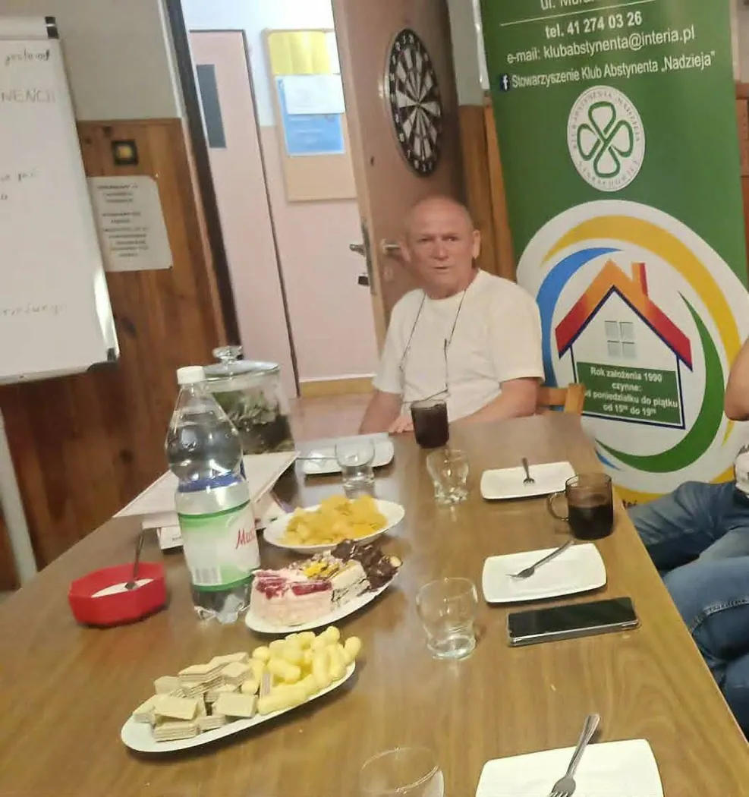
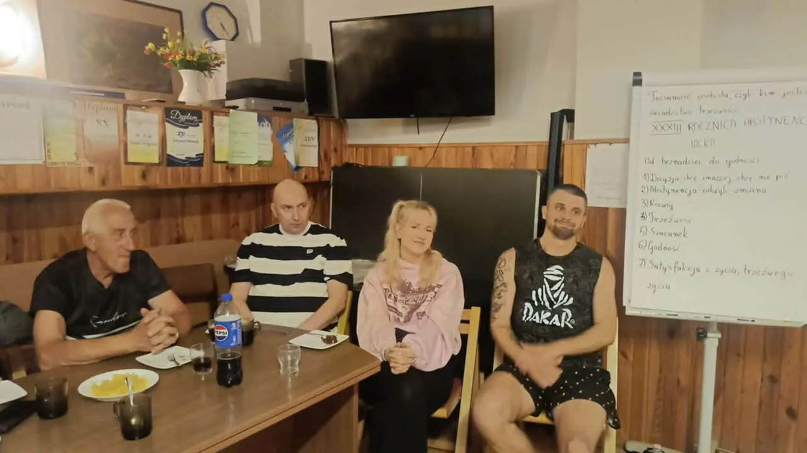
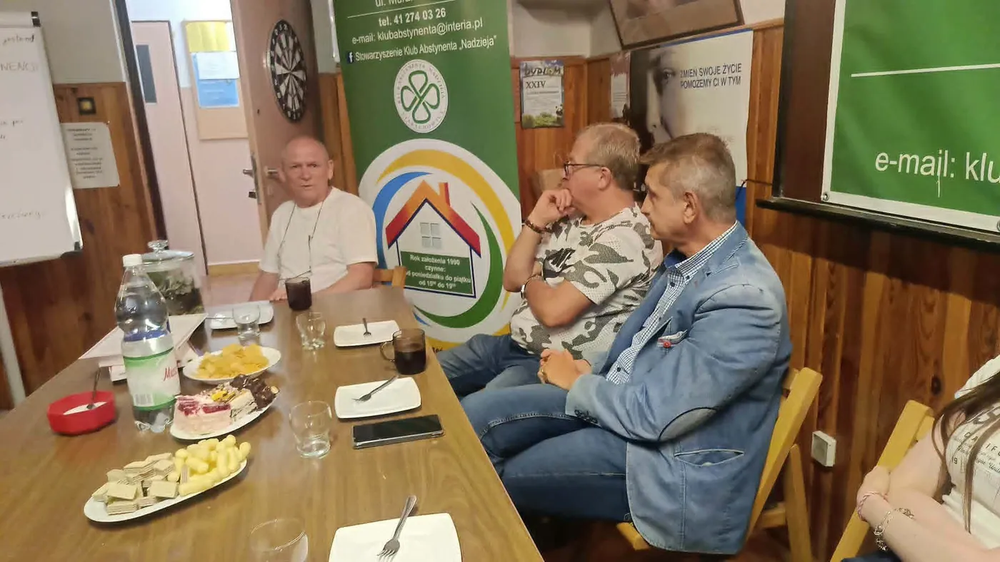
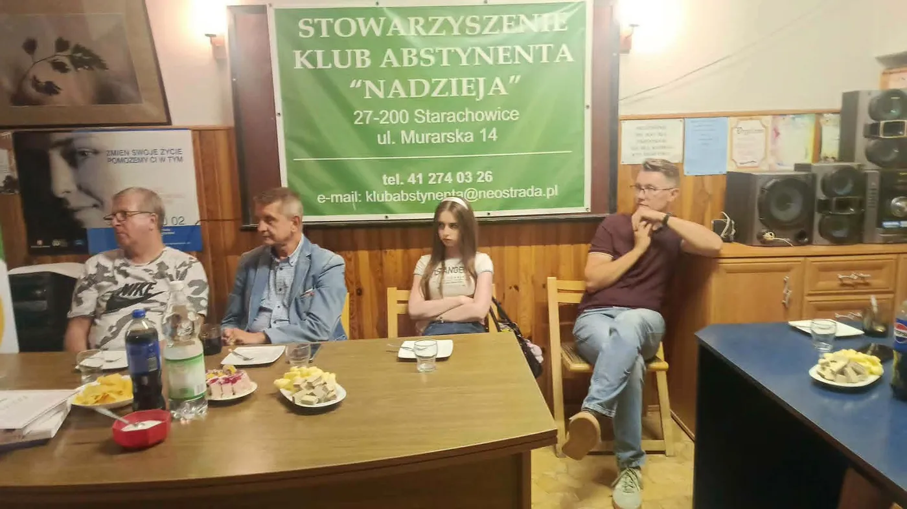
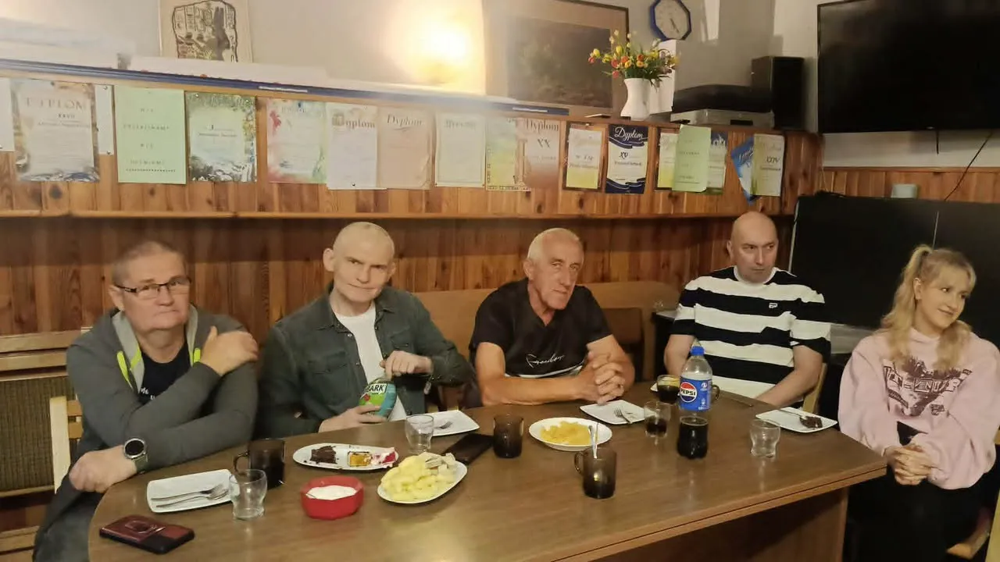
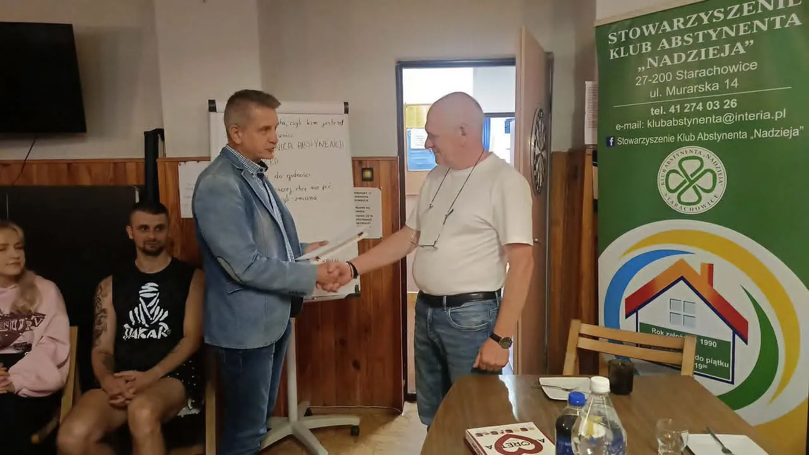
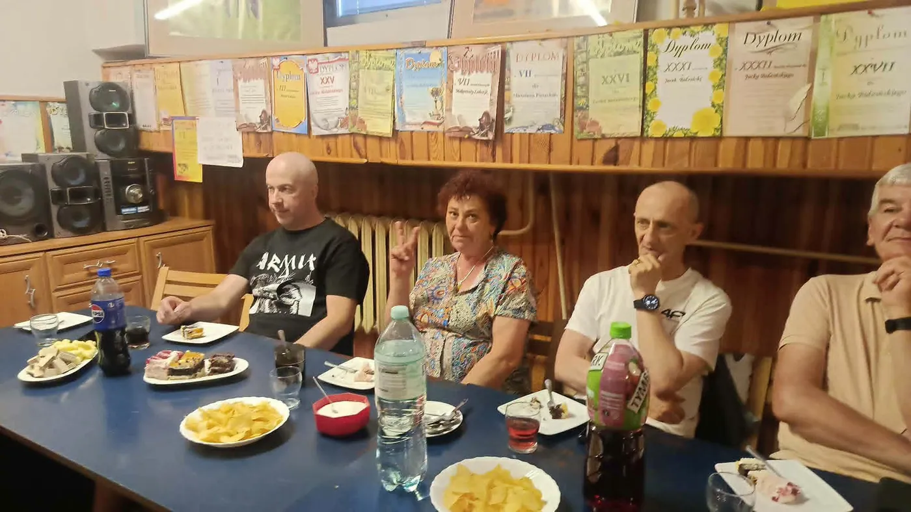
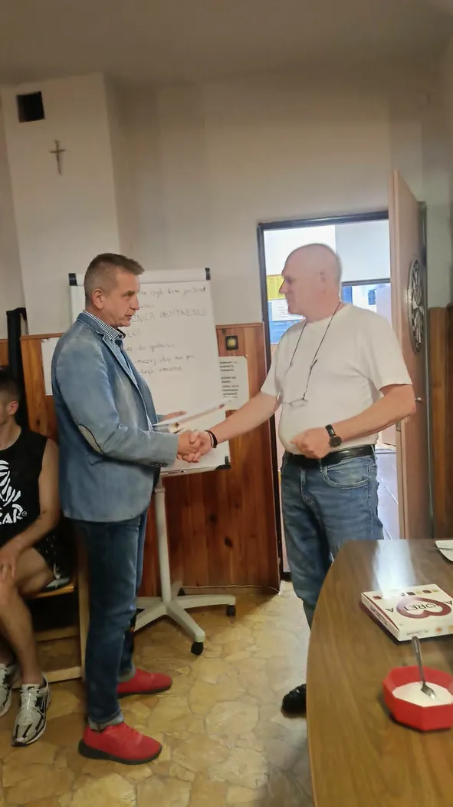